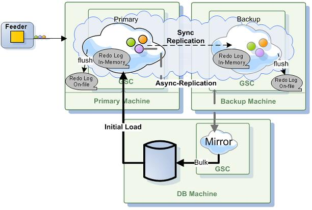
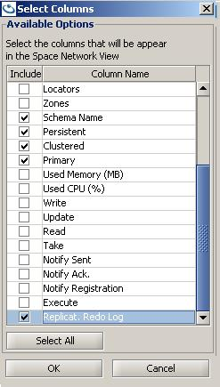

Section Summary: This section describes how to control the replication queue (aka the redo log), what options it provides, and what are the trade-offs involved with each option.
Replication Redo Log
On replicated clusters, each member, which is a source that sends replication events to its targets, has a replication redo log. This is a list of pending replication packets that need to be dispatched to the different targets.

A replication packet is either a single non-transactional "destructive" (write/take/update) operation, or a group of such operations that are done under the same transaction. The redo log contains a single list that is kept for all the targets, and for each target a different state is maintained, which represents its position in the redo log. When the cluster is at a normal state, this redo log should remain at some low constant size. However, in certain common scenarios, such as a momentary network disconnection, or a burst of high load, the redo log keeps all the pending events that need to be replicated until the source member manages to re-establish connection with the target, or until the replication target manages to catch up with the temporary load. As a result the redo log size starts to increase, and it can become quite large, depending on the different cluster usage, which affects the rate of replicated events creation.
Redo Log Capacity Configuration
| The below configuration parameters have a significant effect on the behavior of the replication mechanism and the overall and performance of the space cluster. You should carefully evaluate every change you make to their default values, and consult the GigaSpaces support team if needed |
Here are the parameters you may configure to tune the redo log behavior. You may configure the redo log behavior between replicated spaces and between the spaces and the Mirror:
| Space Cluster Property | Description | Default Value |
|---|---|---|
| cluster-config.groups.group.repl-policy.redo-log-capacity | Specifies the total capacity of replication packets the redo log can hold for a standard replication target. | 150000 |
| cluster-config.groups.group.repl-policy.redo-log-memory-capacity | Specifies the maximum number of replication packets the redo log keeps in memory. | 150000 |
| cluster-config.groups.group.repl-policy.redo-log-recovery-capacity | Specifies the total capacity of replication packets the redo log can hold for a standard replication target while it is undergoing a recovery process. | 5000000 |
| cluster-config.groups.group.repl-policy.on-redo-log-capacity-exceeded | See the Handling an Increasing Redo Log for details. | drop-oldest |
| cluster-config.groups.group.repl-policy.on-missing-packets | Options: ignore , recover. See the Handling Dropped Replication Packets for details. | recover |
| cluster-config.mirror-service.redo-log-capacity | Specifies the total capacity of replication packets the redo log can hold for a mirror service replication target. | 1000000 |
| cluster-config.mirror-service.on-redo-log-capacity-exceeded | See the Handling an Increasing Redo Log for details. | block-operations |
The following parameters are low level configuration that relates to the swap redo log mechanism:
| Space Cluster Property | Description | Default Value |
|---|---|---|
| cluster-config.groups.group.repl-policy.swap-redo-log.flush-buffer-packet-count | Specifies the number of packets buffer size that the swap redo log is using when flushing packets to the disk. | 500 |
| cluster-config.groups.group.repl-policy.swap-redo-log.segment-size | Specifies the size in bytes of each swap redo log segment file. | 10MB |
| cluster-config.groups.group.repl-policy.swap-redo-log.fetch-buffer-packet-count | Specifies the number of packets buffer size that the swap redo log is using when retrieving packets from the disk to the memory. | 500 |
| cluster-config.groups.group.repl-policy.swap-redo-log.max-scan-length | Specifies the maximum allowed scan length in bytes in swap redo log file in order to locate a packet. | 50KB |
| cluster-config.groups.group.repl-policy.swap-redo-log.max-open-cursors | Specifies the maximum number of open file descriptor that the swap redo log will use. | 10 |
Here is an example how you should use the above:
<os-core:space id="space" url="/./space" mirror="true"> <os-core:properties> <props> <prop key="cluster-config.groups.group.repl-policy.redo-log-capacity">100000</prop> <prop key="cluster-config.groups.group.repl-policy.redo-log-memory-capacity">100</prop> </props> </os-core:properties> </os-core:space>
For all of these parameters, -1 specifies unlimited behavior. When the memory capacity is smaller than the entire capacity, if the memory capacity is reached, the redo log stores the remaining packets on the disk, thus preventing the JVM from running out of memory when the redo log size is increasing for the reasons mentioned above.
The redo log capacity for a mirror service must be the same or higher than the redo log capacity for a non mirror target.
Handling an Increasing Redo Log
There are two major causes for the redo log size to increase to such an extent, that it may indicate or cause a future problem. One cause is long disconnections, and the other is when the target (i.e backup) space can't keep up with the source (i.e primary) space - e.g. a mirror service that persists the replicated data into a database, where the database is constantly slower than the rate of incoming replicated events.
We'll look at the two most common replication targets:
- A Backup
- A Mirror
A backup member has a significant difference compared to the mirror scenario. It can always perform a full recovery from its source (primary) partner. However, a mirror is a stateless component, which only tunnels the changes in the cluster to its target, normally a database. Therefore it cannot recover missing packets.
To handle these scenarios, the redo log capacity should be used, and the type of action to take once the capacity is reached, can be configured. That action is configured for two types of replication targets - a mirror target and a non mirror target in the cluster schema. A mirror is configured in the mirror service element, and a non mirror target is configured in the replication policy element.
Both have the same parameter name - on-redo-log-capacity-exceeded, and two available options:
- block-operations - all cluster operations that need to be replicated (write/update/take) are blocked until the redo log size decreases below the capacity. (Users get RedoLogCapacityExceededException exceptions while trying to execute these operations.)
- drop-oldest - the oldest packet in the redo log is dropped.
Since a mirror can never recover missing packets, it should probably be configured with the block-operation mode when the redo log size is exceeded. Otherwise, changes can be dropped before reaching the database. Additionally, its redo log capacity should probably be higher for the same reason. If the redo log size reaches this state frequently, it means that the mirror is not handling the load, and the cluster and environment should be examined.
A backup space can always fall back to full recovery, so it is reasonable to configure replication to it in drop-oldest mode, instead of block-operation mode. Also one can have a smaller redo log capacity, for it to avoid writing packets to disk when a long disconnection occurs and forcing a full recovery by the backup. If the redo log size is very large, it can even take more time just to replicate cluster changes, instead of just performing full recovery of the data.
The redo-log-recovery-capacity parameter is used only when a target space member is currently recovering from a source space member (both target and source can never be a mirror space), when this happens, the redo log size of the source can increase since it holds the replication back log accumulated during the recovery process, and we would like it to be larger than the regular capacity. This is done by setting the redo-log-recovery-capacity, if this capacity is reached during a recovery process, new replicated operation will be blocked (With the same exception as above) until the size reduces.
Handling Dropped Replication Packets
An additional configurable property of replication, is how a backup replication target behaves when there are missing replication packets, due to packets being dropped when configuring the drop-oldest behavior at its source. An active space (primary) has no choice but to accept the state when expected replication packets are missing, and keep running as usual - e.g. an active-active replicated cluster. However, a backup space can be configured either to ignore missing packets, or once it encounters such a scenario, change its state to inconsistent. This causes it to be automatically redeployed, which forces a full recovery, thus keeping its state synchronized with the primary. This property is configured in the cluster schema replication policy element, by setting on-missing-packets to ignore or recover. A backup space has this configured to recover by default.
| This property only affects spaces that are not in primary mode. Hence it has no affect on active-active topologies, and on-missing-packets is in ignore mode. |
Recommendations
- Configuring an unlimited redo log capacity and a limited memory capacity, can create a risky situation if there is a mirror, so this should be done with extreme care. When the redo log capacity is unlimited and the memory capacity is reached, the redo log is kept in the disk, if the mirror is not keeping up with the pace. This means that the redo log can increase and reach a huge size without being noticed (other than monitoring the redo log size via management facilities). This can create a very big gap between the cluster state and the database state without any automatic throttling. This can also eventually cause the disk to run out of space.
- When using the drop-oldest replication mode on active-active topologies, or towards a mirror target, missing replication packets do cause differences between cluster members, and this should be taken into account.
Application Specific Tuning
When tuning the redo log capacities for your application, you should tune the redo log capacities in two aspects:
- allowed disconnection time
- memory consumption
For instance, consider the situation where you have a mirror, and you want the system to have a maximum backlog of the last 5 minutes when a mirror service is down, and after that you want to block new operations. In this case, you should consider what is the expected performance of a single partition per second - e.g. 5,000 transactions. Multiply this by 5 minutes, which results in a configuration of 1,500,000 redo-log-capacity for the mirror target, and operations are blocked (block-operations) when this size is reached. When it comes to memory consumption, you should have an approximation of the average memory size of each replication packet (single "destructive" transaction/non-transactional operation), e.g. 1Kb. Then if you wish to hold up to 200Mb of packets in memory, this results in 200,000 packets configured for the redo-log-memory-capacity.
Limitations
When EDS is used with the central data source set to false, (which means each cluster member has its own private data base), a backup recovers from its private database once re-started and not from its primary space. Therefore if the drop-oldest replication mode is used, the dropped packets never reach the backup space and these members remain out of sync.
Behavior Changes between 7.1 and Older Versions
The following mechanisms are new to 7.1:
- Swap with disk redo log.
- On redo log capacity exceeded behavior (for both mirror and non mirror target).
- Different redo log capacity between mirror and non mirror target.
- On missing packets behavior.
Versions prior to XAP 7.1 had only one configurable property regarding the redo log - cluster-config.groups.group.repl-policy.redo-log-capacity. The default for that property was -1, which means unlimited. There was no swap with disk mechanism, and as a result, even though the redo-log-capacity was set to unlimited, it was limited by the available memory, and the memory manager would block operations when the memory consumption was getting too high. In 7.1, if the redo-log-memory-capacity is limited, and the redo-log-capacity is unlimited, packets are written to disk, and therefore the redo log size is not blocked by the memory manager. Because we have improved the feature set when it comes to replication, we have also adjusted the default configuration for the partitioned-sync2backup schema, to better reflect the common scenario.
| Property | 7.0 Defaults | 7.1 Defaults |
|---|---|---|
| cluster-config.groups.group.repl-policy.redo-log-capacity | -1 | 150000 |
| cluster-config.groups.group.repl-policy.redo-log-memory-capacity | -1 | 150000 |
| cluster-config.groups.group.repl-policy.redo-log-recovery-capacity | -1 | 5000000 |
| cluster-config.groups.group.repl-policy.on-redo-log-capacity-exceeded | drop-oldest | |
| cluster-config.groups.group.repl-policy.on-missing-packets | recover | |
| cluster-config.mirror-service.redo-log-capacity | -1 | 1000000 |
| cluster-config.mirror-service.on-redo-log-capacity-exceeded | block-operations |
These are supposed to address the following scenario: a cluster tolerates a 4-5 minute backlog accumulated at the cluster members, without being replicated to the mirror, assuming a load of 3,000-5,000 transactions per second at each partition. Once the redo log size reaches this size, operations are blocked until the mirror reconnects and/or keeps up with the pace. For a backup space, the redo log is kept for a short disconnection of 20-30 seconds. Any disconnection longer than that is considered as if the backup is down, and it has to do a full recovery. Once the connection is re-established, its redo log is dropped without blocking operations.
If a limited redo log capacity was used prior to 7.1, it is equivalent to the following properties in 7.1 (i.e a limit of 100,000 packets):
| Property | 7.0 Settings | 7.1 Equivallent Settings |
|---|---|---|
| cluster-config.groups.group.repl-policy.redo-log-capacity | 100000 | 100000 |
| cluster-config.groups.group.repl-policy.redo-log-memory-capacity | N/A | 100000 |
| cluster-config.groups.group.repl-policy.redo-log-recovery-capacity | N/A | 100000 |
| cluster-config.groups.group.repl-policy.on-redo-log-capacity-exceeded | N/A | drop-oldest |
| cluster-config.groups.group.repl-policy.on-missing-packets | N/A | ignore |
| cluster-config.mirror-service.redo-log-capacity | N/A | 100000 |
| cluster-config.mirror-service.on-redo-log-capacity-exceeded | N/A | drop-oldest |
Getting the Redo Log size
You may get the redo log size via the GS-UI or via the API.
View Redo Size via the GigaSpaces Management Center
Enable the redo log size monitoring:

A new column will be added to the space list table:

Get the redo log via the Admin API
See below example using the Admin API that retrieve the redo log size:
Admin admin = new AdminFactory().createAdmin(); Space space = admin.getSpaces().waitFor(spaceName, 10, TimeUnit.SECONDS); SpacePartition partitions[]= space.getPartitions(); SpacePartition partition = ... long redologSize = partition.getPrimary().getStatistics().getReplicationStatistics(). getOutgoingReplication().getRedoLogSize();